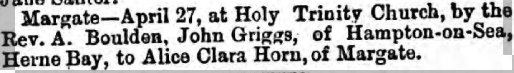
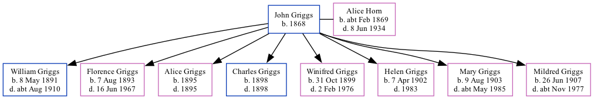

John Edward Griggs 1868 -
[ Home ] | [ Calendar ] | [ Surnames Index ] | [ Family History ]John Griggs, the husband of Alice Clara Horn (the first cousin three-times-removed on the father's side of Nigel Horne), was born in Herne Bay, Kent, England in 18681 and married Alice (with whom he had 8 children: William James, Florence May, Alice Maud Mary, Charles Walter, Winifred Doris, Helen Maud, Mary Ann and Mildred Sylvia) at Holy Trinity Church, Margate, Kent, England on Apr 27, 18902.
Throughout his life, he lived at 103 Milton Road in Margate on Mar 31, 19011 and on Apr 2, 19113.
Children
- William James was born on May 8, 1891
- Florence May was born on Aug 7, 1893
- Alice Maud Mary was born in 1895
- Charles Walter was born in 1898
- Winifred Doris was born on Oct 31, 1899
- Helen Maud was born on Apr 7, 1902
- Mary Ann was born on Aug 9, 1903
- Mildred Sylvia was born on Jun 26, 1907
Citations
- 1901 England, Wales & Scotland Census - Findmypast (was age 33 and the head of the household)
- Kent Marriages And Banns - Findmypast
- 1911 Census for England & Wales - Findmypast (was age 41 and the head of the household)
Media
Thanet Advertiser - 3 May 1890

1911 Census for England & Wales - GBC/1911/RG14/04491/0387/1
England & Wales marriages 1837-2005 Transcription - BMD-M-1890-2-AZ-000131-076
Family Tree
Generated by ged2site. Last updated on Nov 13, 2024